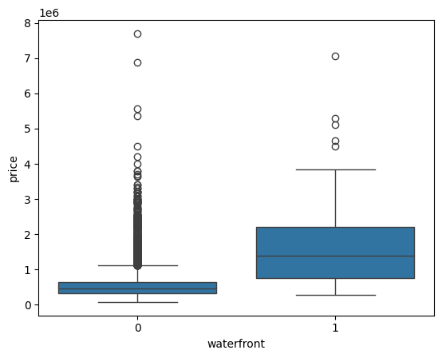
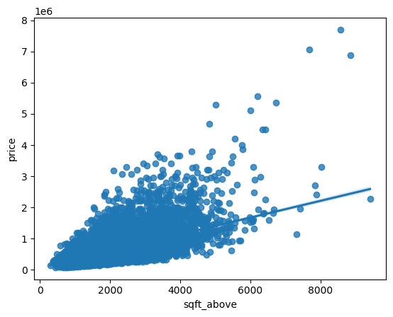

A Real Estate Investment Trust wants to enter the residential market and needs a data-driven way to estimate property market value before committing capital. The challenge is that price is not simply a function of size: grade, condition, location (waterfront, latitude), and renovation history each contribute — and interact — in ways that a one-variable model cannot capture.
The project answers a practical question: how much of house price variance can be explained by observable structural and geographic features, and what modelling strategy extracts the most signal from this data?
The dataset covers 21,613 house sales in King County (Seattle area) between May 2014 and May 2015. Each record contains 21 variables: structural features (sqft_living, sqft_above, sqft_basement, floors, bedrooms, bathrooms, grade, condition), location (lat, long, zipcode, waterfront, view), and renovation history (yr_built, yr_renovated).
Data quality steps before modelling:
id and Unnamed: 0 — identifiers with no relationship to price.bedrooms and 10 in bathrooms were filled with their respective column means. Both columns are otherwise complete across 21,613 records.Three findings from EDA shaped modelling decisions:


Full correlation ranking against price: sqft_living led at r = 0.70, followed by grade (0.67), sqft_above (0.61), sqft_living15 (0.59). zipcode (−0.05) and long (0.02) were near-zero — confirming that raw longitude/zipcode encode almost no price information without further transformation.
Four modelling approaches were evaluated, each addressing a specific limitation of the previous one.
R² = 0.493 · Full dataset
A single predictor explains just under half the variance in price. Useful as a confirmation that sqft_living is a genuine signal, but insufficient as a standalone model: it ignores grade, location, and every other structural feature.
R² = 0.658 · Full dataset
Features: floors, waterfront, lat, bedrooms, sqft_basement, view, bathrooms, sqft_living15, sqft_above, grade, sqft_living.
Adding location (lat) and quality signals (grade, view, waterfront) improved R² by 16.5 percentage points. This confirms that house price is genuinely multi-dimensional: living area alone misses the location and quality premium captured by these variables.
R² = 0.751 · Full dataset
Standardising features before polynomial expansion ensured that no variable dominated due to scale differences. The polynomial transform introduced interaction and squared terms, allowing the model to capture the non-linear relationship between sqft_living and price that was visible in the residuals of the linear model. Highest R² across all configurations.
R² = 0.648 · Test set (15%, n = 3,242)
Ridge regularisation penalises large coefficients to reduce overfitting. The test-set score of 0.648 is the most reliable estimate of out-of-sample performance among the linear configurations — close to the full-dataset score of the 11-feature linear model, which confirms generalisation without degradation.
R² = 0.700 · Test set (15%, n = 3,242)
Combining polynomial expansion with Ridge regularisation produced the best generalisation score. The regularisation term was essential: without it, the gap between full-data R² (0.751) and held-out R² (0.700) signals real overfitting risk when the feature space is expanded on a dataset of this size.
| Model | R² | Evaluated on | Notes |
|---|---|---|---|
| Linear Regression (sqft_living) | 0.493 | Full dataset | Single-feature baseline |
| Linear Regression (11 features) | 0.658 | Full dataset | Location + quality signals added |
| Pipeline (Scaler + Poly + LR) | 0.751 | Full dataset | Best overall R²; non-linear interactions captured |
| Ridge (α = 0.1) | 0.648 | Test set (15%) | Regularised; reliable out-of-sample estimate |
| Ridge + Polynomial (degree = 2) | 0.700 | Test set (15%) | Best generalisation |